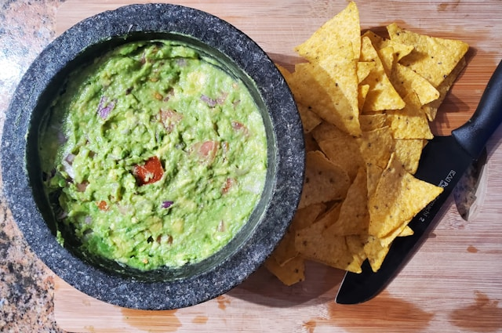

Guacamole Recipe

Description
Fresh and creamy guacamole made from ripe avocados, lime, and
spices.
Perfect as a dip or topping for tacos, nachos, and sandwiches.
Ingredients
Steps
-
Cut the avocados in half, remove the pit, and scoop the flesh.
- Mash the avocado in a bowl until creamy.
- Add lime juice and a pinch of salt.
- Mix well and adjust seasoning to taste.
- Serve fresh as a dip or topping.
Home